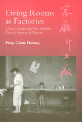

<body bgcolor="#FFFFFF" text="#000000" link="#0000FF" vlink="#CC0000" alink="#CC0000"><center><hr width="350" size="1" align="center" noshade>A detailed portrait and sophisticated analysis of married women working Taiwan's export factories<hr width="350" size="1" align="center" noshade><p><a href="https://cdcshoppingcart.uchicago.edu/Cart/ChicagoBook.aspx?ISBN=9781566393898&&PRESS=temple" target="_top">Buy this book!</a> | <a href="https://cdcshoppingcart.uchicago.edu/Cart/Cart.aspx?PRESS=temple" target="_top">View Cart</a> | <a href="https://cdcshoppingcart.uchicago.edu/Cart/Cart.aspx?PRESS=temple" target="_top">Check Out</a></p><p></p></center><!--none//--><h1>Living Rooms as Factories</h1>
<H2>Class, Gender, and the Satellite Factory System in Taiwan</H2>
<h3>Ping-Chun Hsiung</h3>
<P>cloth 1-56639-389-2 $90.50, Jan 96, <FONT COLOR=#990033>Available</FONT>
<br>paper 1-56639-390-6 $35.95, Jan 96, <FONT COLOR=#990033>Available</FONT>
<br>Electronic Book 1-43990-765-X $35.95 <FONT COLOR=#990033>Available</FONT>
<BR> 200 pp
6x9
25&nbsp;tables 1&nbsp;figure 14&nbsp;halftones
</P><BLOCKQUOTE><I>"The book is well written and integrates macro statistics and ethnographic data in a feminist study of class and gender issues during the process of economic development.... Hsiung's work on Taiwan's experience provides valuable knowledge that may also be applied to the feminist study of mainland Chinese economic growth and development."</i>
<br>&#151<b><i>Gender and Society</i></b><I></I></BLOCKQUOTE>
<p>In Taiwan, small-scale subcontracting factories of thirty employees or less make items for export, like the wooden jewelry boxes that Ping-Chun Hsiung made when she worked in six such factories. These factories are found in rice fields and urban areas, front yards and living rooms, mostly employing married women in line with the government slogan that promotes work in the home&#151"Living Rooms as Factories."
<p>Hsiung studies the experiences of the married women who work in this
satellite system of factories, and how their work and family lives have contributed to Taiwan's 9.1 percent GNP growth over the last three decades, the "economic miracle." This vivid portrayal of the dual lives of these women as wives, mothers, daughters-in-law and as manufacturing workers also
provides sophisticated analyses of the links between class and gender stratification, family dynamics, state policy, and global restructuring within the process of industrialization.
<p>Hsiung uses ethnographic data to illustrate how, in this system of intersecting capitalist logic and patriarchal practices, some Taiwanese women experience upward mobility by marrying into the owners' family, while others remain home and wage workers. Although women in both groups acknowledge gender inequality, this commonality does not bridge divergent class affiliations. Along with a detailed account of the oppressive labor practices, this book reveals how workers employ clandestine tactics to defy the owners' claims on their labor.
<BR>&nbsp;<h2>Excerpt</h2><P>Excerpt available at <a href="http://www.temple.edu/tempress">www.temple.edu/tempress</a></p>
<BR>&nbsp;<h2>Reviews</h2>
<p><i>"</i>Living Rooms as Factories<i> is an up-to-date and surprising ethnography of industrial-worker women; valuable contribution to Chinese feminist studies; and an exemplary peek at social dynamics in Taiwan.... This vigorously-written, thoughtful book would be an excellent place from which to begin the study of present-day Taiwan, of women at work, and of the very roots of East Asian development."</i>
<br>&#151<b><i>The Journal of Asian Studies</i></b>
<p><i>"Sociologists interested in gender studies, family, social stratification, labor issues, political economy, and economic development will find this book of great value. It is well organized and provided many new insights into these areas."</i>
<br>&#151<b><i>The American Journal of Sociology</i></b>
<p><i>"[Husing] carefully details the daily schedules and labour payment schemes that divide and control the dependent work force. He addition of participant observation to the process brings it alive.... a must for students of women's studies, labour, social history and East Asia."</i>
<br>&#151<b><i>The China Quarterly</i></b>
<p><i>"In modern times it has become increasingly difficult to find the line between factory and home, particularly for women living at the margins of the international political economy. Ping-Chun Hsiung has written a fascinating book about the blurring of this distinction in her exploration of the satellite factory system.... the narratives are so nicely connected to larger theoretical issues that the insights are often worth reading twice."</i>
<br>&#151<b><i>Contemporary Sociology</i></b>
<BR>&nbsp;<h2>Contents</h2><P>
<p>Acknowledgments
<br>Introduction
<br>1. Taiwan's Economic Miracle
<br>2. "Living Rooms as Factories": Women, the State, and Taiwan's Economic Development
<br>3. Satellite Factory System from Within
<br>4. Women, Marriage, and Family in the Satellite Factory System
<br>5. The Everyday Construction of an Economic Miracle: Labor Control on the Shop Floor
<br>6. Are Women Really "Petty Minded"? Awareness, Compliance, and Resistance in the Workplace
<br>Conclusion
<br>Notes
<br>References
<br>Index
<br>Photographs
</P><BR>&nbsp;<H2>About the Author(s)</H2>
<table><tr><td valign="top"><img src="/tempress/authors/1235_au.gif" height="90" width="75"></td><td width="100%" valign="middle"><p><b>Ping-Chun Hsiung</b> is Assistant Professor of Sociology at the University of Toronto, Scarborough.</P></td></tr></table>
<BR><H2>Subject Categories</H2>
<p><A HREF="/tempress/women.html" TARGET="_top">Women's Studies</a>
<BR><A HREF="/tempress/political.html" TARGET="_top">Political Science and Public Policy</a>
<BR><A HREF="/tempress/asian.html" TARGET="_top">Asian Studies</a>
</p>
<p align="center"><a href="https://cdcshoppingcart.uchicago.edu/Cart/ChicagoBook.aspx?ISBN=9781566393898&&PRESS=temple" target="_top">Buy this book!</a> | <a href="https://cdcshoppingcart.uchicago.edu/Cart/Cart.aspx?PRESS=temple" target="_top">View Cart</a> | <a href="https://cdcshoppingcart.uchicago.edu/Cart/Cart.aspx?PRESS=temple" target="_top">Check Out</a></p><p><font face="Arial" size="1"><a href="copyright.html" onMouseOver="window.status='Web Copyright Policy';return true;" onMouseOut="window.status=''" title="Web Copyright Policy">&copy;</a> 2017 <a href="http://www.temple.edu" target="new" onMouseOver="window.status='Link to Temple University home page';return true;" onMouseOut="window.status=''" title="Link to Temple University home page">Temple University</a>. All Rights Reserved. http://www.temple.edu/tempress/titles/1235_reg.html</font></p>